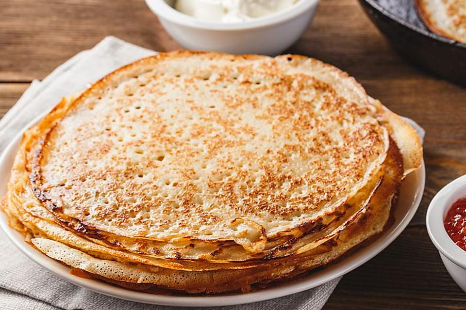

Mlyntsi

Description
Mlyntsi are thin pancakes, similar to French-style crepes, that are a very popular food in Ukraine. These versatile crepes can be enjoyed for breakfast, as an appetizer or main course, or for dessert, depending on what you pair with them.
Ingredients
- 4 eggs
- 2 cups warm milk
- 3/4 cup all-purpose flour
- 1/4 cup whole wheat buckwheat flour
- 1 tablespoon butter (melted)
- 2 teaspoons sugar
- 1 teaspoon cornstarch
- 1/8 teaspoon salt
- 1/4 teaspoon vanilla
How to cook
- In a large bowl, beat together eggs, sugar and salt.
- Add flours, cornstarch, vanilla and butter. Mix well.
- Pour in milk, a little at a time, and mix thoroughly until the batter is smooth. The batter should be runny.
- Heat a cast iron skillet or frying pan, on high temperature.
- Add a little bit of oil, just a few drops. Reduce the flame.
- Ladle the batter onto the center of the skillet and immediately swirl it so that it evenly coats the bottom of the pan.
- When the underside turns brown, flip the crepe over and cook for a few more seconds. Stack the mlyntsi on a plate to keep them from drying out.
- Spread cottage cheese or ricotta cheese over each crepe and roll it. You can add some vanilla and sugar and mix it with the ricotta cheese if desired.
Home